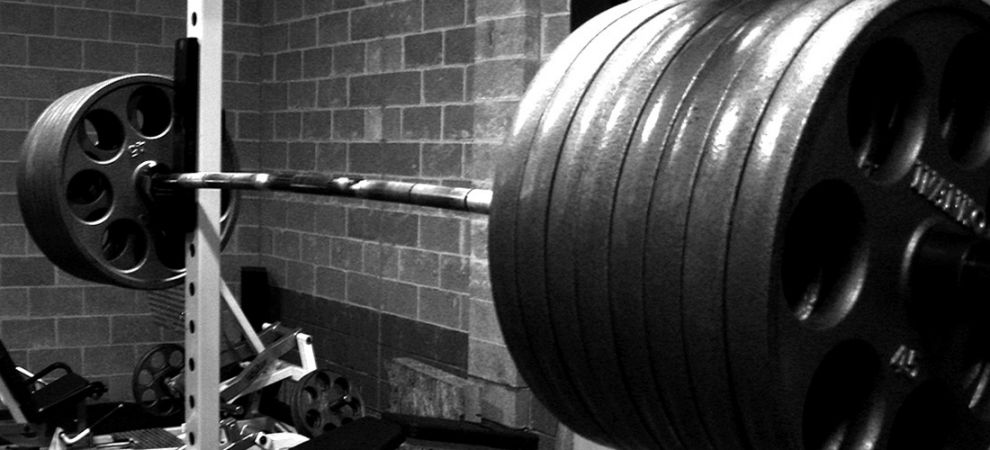
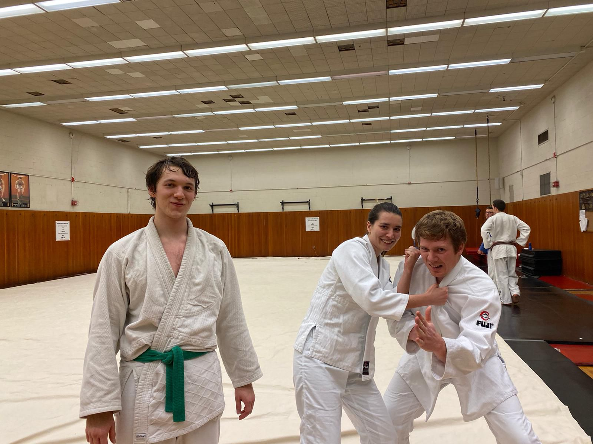

Welcome to my website! My name is Zach Kutschke and I happen to be particularly interested in machine design and systems engineering, but I love everything science and engineering. The majority of my professional experience has been a mix of hands on projects and research to test/prototype everything from manufactured industrial components to early stage consumer products and devices. My personal projects take a lot of different forms depending on what grabbed my interest at that particular moment and what resources I had available This site mainly consists of the engineering-type projects I've undertaken in recent(ish) years. I do have to apologize for the overall quality of the site, my main focus is on getting the content up rather than building a beautiful website. I promise my documentation skills aren't terrible either, for both brevity and information sensitivity's sake I've deferred to not show a lot of the initial process sketches and analysis. But please feel free to take a look at what I've worked on and to reach out with any questions. In addition to slapping together contraptions that may or may not eventually kill me, I have a handful of other hobbies.
https://www.ironville.com/ironville-loaded-barbell-strongman-clothing/
I love everything about lifting and fitness. I haven't yet competed but I hope to some day take home a handful of records in raw powerlifting. I'm also slowly working on becomming a certified personal trainer.

Not that it's obvious from the blurry cell phone pictures of my projects, but I really enjoy photography when I have the time.
I recently came to learn that I love fighting people when I joined MIT's Judo club. It usually ends up with me getting beaten into the ground, but to each their own. Disclaimer: I'm actually a white belt, I just forgot it on that day.